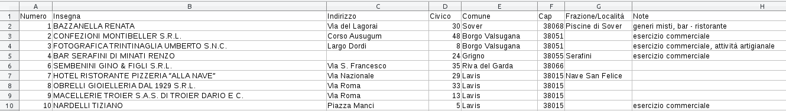

Loading Files 2 - CSV files#
Download exercises zip#
There can be various formats for tabular data, among which you surely know Excel (.xls or .xslx). Unfortunately, if you want to programmatically process data, you should better avoid them and prefer if possible the CSV format, literally ‘Comma Separated Value’. Why? Excel format is very complex and may hide several things which have nothing to do with the raw data:
formatting (bold fonts, colors …)
merged cells
formulas
multiple tabs
macros
Correctly parsing complex files may become a nightmare. Instead, CSVs are far simpler, so much so you can even open them witha simple text editor.
We will try to open some CSV, taking into consideration the possible problems we might get. CSVs are not necessarily the perfect solution for everything, but they offer more control over reading and typically if there are conversion problems is because we made a mistake, and not because the reader module decided on its own to exchange days with months in dates.
Why parsing a CSV ?#
To load and process CSVs there exist many powerful and intuitive modules such as Pandas in Python or R dataframes. Yet, in this notebook we will load CSVs using the most simple method possible, that is reading row by row, mimicking the method already seen in the previous part of the tutorial. Don’t think this method is primitive or stupid, according to the situation it may save the day. How? Some files may potentially occupy huge amounts of memory, and in moder laptops as of 2019 we only have 4 gigabytes of RAM, the memory where Python stores variables. Given this, Python base functions to read files try their best to avoid loading everything in RAM. Tyipcally a file is read sequentially one piece at a time, putting in RAM only one row at a time.
QUESTION 2.1: if we want to know if a given file of 1000 terabytes contains only 3 million rows in which the word ‘ciao’ is present, are we obliged to put in RAM all of the rows ?
ANSWER: no, it is sufficient to keep in memory one row at a time, and hold the count in another variable
QUESTION 2.2: What if we wanted to take a 100 terabyte file and create another one by appending to each row of the first one the word ‘ciao’? Should we put in RAM at the same time all the rows of the first file ? What about the rows of second one?
ANSWER: No, it is enough to keep in RAM one row at a time, which is first read from the first file and then written right away in the second file.
Reading a CSV#
We will start with artifical example CSV. Let’s look at example-1.csv which you can find in the same folder as this Jupyter notebook. It contains animals with their expected lifespan:
animal, lifespan
dog, 12
cat, 14
pelican, 30
squirrel, 6
eagle, 25
We notice right away that the CSV is more structured than files we’ve seen in the previous section
in the first line there are column names, separated with commas:
animal, lifespanfields in successive rows are also separated by commas
,:dog, 12
Let’s try now to import this file in Python:
[ ]:
import csv
with open('data/example-1.csv', encoding='utf-8', newline='') as f:
# we create an object 'my_reader' which will take rows from the file
my_reader = csv.reader(f, delimiter=',')
# 'my_reader' is an object considered 'iterable', that is,
# if used in a 'for' will produce a sequnce of rows from csv
# NOTE: here every file row is converted into a list of Python strings !
for row in my_reader:
print('We just read a row !')
print(row) # prints variable 'row', which is a list of strings
print('') # prints an empty string, to separate in vertical
We just read a row !
['animal', ' lifespan']
We just read a row !
['dog', '12']
We just read a row !
['cat', '14']
We just read a row !
['pelican', '30']
We just read a row !
['squirrel', '6']
We just read a row !
['eagle', '25']
We immediatly notice from output that example file is being printed, but there are square parrenthesis ( [] ). What do they mean? Those we printed are lists of strings
Let’s analyze what we did:
import csv
Python natively has a module to deal with csv files, which has the intuitive csv name. With this instruction, we just loaded the module.
What happens next? As already did for files with lines before, we open the file in a with block:
with open('data/example-1.csv', encoding='utf-8', newline='') as f:
my_reader = csv.reader(f, delimiter=',')
for row in my_reader:
print(row)
For now ignore the newline='' and notice how first we specificed the encoding
Once the file is open, in the row
my_reader = csv.reader(f, delimiter=',')
we ask to csv module to create a reader object called my_reader for our file, telling Python that comma is the delimiter for fields.
NOTE: my_reader is the name of the variable we are creating, it could be any name.
This reader object can be exploited as a sort of generator of rows by using a for cycle:
for row in my_reader:
print(row)
In for cycle we employ lettore to iterate in the reading of the file, producing at each iteration a row we call row (but it could be any name we like). At each iteration, the variable row gets printed.
If you look closely the prints of first lists, you will see that each time to each row is assigned only one Python list. The list contains as many elements as the number of fields in the CSV.
✪ EXERCISE 2.3: Rewrite in the cell below the instructions to read and print the CSV, paying attention to indentation:
[ ]:
# write here
Show solution
[ ]:
import csv
with open('data/example-1.csv', encoding='utf-8', newline='') as f:
# we create an object 'my_reader' which will take rows from the file
my_reader = csv.reader(f, delimiter=',')
# 'my_reader' is an object considered 'iterable', that is,
# if used in a 'for' will produce a sequnce of rows from csv
# NOTE: here every file row is converted into a list of Python strings !
for row in my_reader:
print("We just read a row !")
print(row) # prints variable 'row', which is a list of strings
print('') # prints an empty string, to separate in vertical
✪✪ EXERCISE 2.4: try to put into big_list a list containing all the rows extracted from the file, which will be a list of lists like so:
[['animal', 'lifespan'],
['dog', '12'],
['cat', '14'],
['pelican', '30'],
['squirrel', '6'],
['eagle', '25']]
HINT: Try creating an empty list and then adding elements with .append method
[ ]:
# write here
Show solution
[ ]:
import csv
with open('data/example-1.csv', encoding='utf-8', newline='') as f:
# we create an object 'my_reader' which will take rows from the file
my_reader = csv.reader(f, delimiter=',')
# 'my_reader' is an object considered 'iterable', that is,
# if used in a 'for' will produce a sequnce of rows from csv
# NOTE: here every file row is converted into a list of Python strings !
big_list = []
for row in my_reader:
big_list.append(row)
print(big_list)
✪✪ EXERCISE 2.5: You may have noticed that numbers in lists are represented as strings like '12' (note apeces), instead that like Python integer numbers (represented without apeces), 12:
We just read a row!
['dog', '12']
So, by reading the file and using normal for cycles, try to create a new variable big_list like this, which
has only data, the row with the header is not present
numbers are represented as proper integers
[['dog', 12],
['cat', 14],
['pelican', 30],
['squirrel', 6],
['eagle', 25]]
HINT 1: to jump a row you can use the instruction next(my_reader)
HINT 2: to convert a string into an integer, you can use for example. int('25')
[ ]:
# write here
Show solution
[ ]:
import csv
with open('data/example-1.csv', encoding='utf-8', newline='') as f:
my_reader = csv.reader(f, delimiter=',')
big_list = []
next(my_reader)
for row in my_reader:
big_list.append([row[0], int(row[1])])
print(big_list)
What’s a reader ?#
We said that my_reader generates a sequence of rows, and it is iterable. In for cycle, at every cycle we ask to read a new line, which is put into variable row. We might then ask ourselves, what happens if we directly print my_reader, without any for? Will we see a nice list or something else? Let’s try:
[ ]:
import csv
with open('data/example-1.csv', encoding='utf-8', newline='') as f:
my_reader = csv.reader(f, delimiter=',')
print(my_reader)
<_csv.reader object at 0x7f7e701b7050>
This result is quite disappointing
✪ EXERCISE 2.6: you probably found yourself in the same situation when trying to print a sequence generated by a call to range(5): instead of the actual sequence you get a range object. If you want to convert the generator to a list, what should you do?
[ ]:
# write here
Show solution
[ ]:
import csv
with open('data/example-1.csv', encoding='utf-8', newline='') as f:
my_reader = csv.reader(f, delimiter=',')
print(list(my_reader))
Consuming a file#
Not all sequences are the same. From what you’ve seen so far, going through a file in Python looks a lot like iterating a list. Which is very handy, but you need to pay attention to some things. Given that files potentially might occupy terabytes, basic Python functions to load them avoid loading everything into memory and typically a file is read one piece at a time. But if the whole file is loaded into Python environment in one shot, what happens if we try to go through it twice inside the
same with ? What happens if we try using it outside with? To find out look at next exercises.
✪ EXERCISE 2.7: taking the solution to previous exercise, try to call print(list(my_reader)) twice, in sequence. Do you get the same output in both occasions?
[ ]:
# write here
Show solution
[ ]:
import csv
with open('data/example-1.csv', encoding='utf-8', newline='') as f:
my_reader = csv.reader(f, delimiter=',')
print(list(my_reader))
print(list(my_reader))
✪ EXERCISE 2.8: Taking the solution from previous exercise (using only one print), try down here to move the print to the left (removing any spaces). Does it still work ?
[ ]:
# write here
Show solution
[ ]:
import csv
with open('data/example-1.csv', encoding='utf-8', newline='') as f:
my_reader = csv.reader(f, delimiter=',')
#print(list(my_reader)) # COMMENTED, AS IT WOULD RAISE ON ERROR OF CLOSED FILE
# We can't use commands which read the file outside the with !
✪✪ EXERCISE 2.9: Now that we understood which kind of beast my_reader is, try to produce this result as done before, but using a list comprehension instead of the for:
[['dog', 12],
['cat', 14],
['pelican', 30],
['squirrel', 6],
['eagle', 25]]
If you can, try also to write the whole transformation to create
big_listin one row, usinf the function itertools.islice to jump the header (for exampleitertools.islice(['A', 'B', 'C', 'D', 'E'], 2, None)first two elements and produces the sequence C D E F G - in our case the elements produced bymy_readerwould be rows)
[ ]:
import csv
import itertools
with open('data/example-1.csv', encoding='utf-8', newline='') as f:
my_reader = csv.reader(f, delimiter=',')
# write here
Show solution
[ ]:
import csv
import itertools
with open('data/example-1.csv', encoding='utf-8', newline='') as f:
my_reader = csv.reader(f, delimiter=',')
big_list = [[row[0], int(row[1])] for row in itertools.islice(my_reader, 1, None)]
print(big_list)
✪ EXERCISE 2.10: Create a file my-example.csv in the same folder where this Jupyter notebook is, and copy inside the content of the file example-1.csv. Then add a column description, remembering to separate the column name from the preceding one with a comma. As column values, put into successive rows strings like dogs walk, pelicans fly, etc according to the animal, remembering to separate them from lifespan using a comma, like this:
dog,12,dogs walk
After this, copy and paste down here the Python code to load the file, putting the file name my-example.csv, and try to load everything, just to check everything is working:
[ ]:
# write here
Show solution
[ ]:
# answer:
# animal,lifespan,description
# dog,12,dogs walk
# cat,14,cats walk
# pelican,30,pelicans fly
# squirrel,6,squirrels fly
# eagle,25,eagles fly
✪ EXERCISE 2.11: Not every CSV is structured in the same way, sometimes when we write csvs or import them some tweak is necessary. Let’s see which problems may arise:
In the file, try to put one or two spaces before numbers, for example write down here and look what happens
dog, 12,dogs fly
QUESTION 2.11.1: Does the space get imported?
ANSWER: yes
QUESTION 2.11.2: if we convert to integer, is the space a problem?
ANSWER: no
QUESTION 2.11.3 Modify only dogs description from dogs walk to dogs walk, but don't fly and try to riexecute the cell which opens the file. What happens?
ANSWER: Python reads one element more in the list
QUESTION 2.11.4: To overcome previous problem, a solution you can adopt in CSVs is to round strings containing commas with double quotes, like this: "dogs walk, but don't fly". Does it work ?
ANSWER: yes
Reading as dictionaries#
To read a CSV, instead of getting lists, you may more conveniently get dictionaries in the form of OrderedDicts
NOTE: different Python versions give different dictionaries:
\(<\) 3.6:
dict3.6, 3.7:
OrderedDict\(\geq\) 3.8:
dict
Python 3.8 returned to old dict because in the implementation of its dictionariesthe key order is guaranteed, so it will be consistent with the one of CSV headers
[ ]:
import csv
with open('data/example-1.csv', encoding='utf-8', newline='') as f:
my_reader = csv.DictReader(f, delimiter=',') # Notice we now used DictReader
for d in my_reader:
print(d)
OrderedDict([('animal', 'dog'), (' lifespan', '12')])
OrderedDict([('animal', 'cat'), (' lifespan', '14')])
OrderedDict([('animal', 'pelican'), (' lifespan', '30')])
OrderedDict([('animal', 'squirrel'), (' lifespan', '6')])
OrderedDict([('animal', 'eagle'), (' lifespan', '25')])
Writing a CSV#
You can easily create a CSV by instantiating a writer object:
ATTENTION: BE SURE TO WRITE IN THE CORRECT FILE!
If you don’t pay attention to file names, you risk deleting data !
[ ]:
import csv
# To write, REMEMBER to specify the `w` option.
# WARNING: 'w' *completely* replaces existing files !!
with open('data/written-file.csv', 'w', encoding='utf-8', newline='') as csvfile_out:
my_writer = csv.writer(csvfile_out, delimiter=',')
my_writer.writerow(['This', 'is', 'a header'])
my_writer.writerow(['some', 'example', 'data'])
my_writer.writerow(['some', 'other', 'example data'])
Reading and writing a CSV#
To create a copy of an existing CSV, you may nest a with for writing inside another for reading:
ATTENTION: CAREFUL NOT TO SWAP FILE NAMES!
When we read and write it’s easy to make mistakes and accidentally overwrite our precious data.
To avoid issues:
use explicit names both for output files (es: example-1-enriched.csv) and handles (i.e.
csvfile_out)backup data to read
always check before carelessly executing code you just wrote !
[ ]:
import csv
# WARNING: handle here is called *csvfile_in*
with open('data/example-1.csv', encoding='utf-8', newline='') as csvfile_in:
my_reader = csv.reader(csvfile_in, delimiter=',')
# Notice this 'with' is *inside* the outer one
# To write, REMEMBER to specify the `w` option.
# WARNING 1: handle here is called *csvfile_out*
# WARNING 2: 'w' *completely* replaces existing files !!
with open('data/example-1-enriched.csv', 'w', encoding='utf-8', newline='') as csvfile_out:
my_writer = csv.writer(csvfile_out, delimiter=',')
for row in my_reader:
row.append('something else')
my_writer.writerow(row)
Let’s see the new file was actually created by reading it:
[ ]:
with open('data/example-1-enriched.csv', encoding='utf-8', newline='') as csvfile_in:
my_reader = csv.reader(csvfile_in, delimiter=',')
for row in my_reader:
print(row)
['animal', ' lifespan', 'something else']
['dog', '12', 'something else']
['cat', '14', 'something else']
['pelican', '30', 'something else']
['squirrel', '6', 'something else']
['eagle', '25', 'something else']
CSV Botteghe storiche#
Usually in open data catalogs like the popular CKAN platform (for example dati.trentino.it, data.gov.uk, European data portal run instances of CKAN) files are organized in datasets, which are collections of resources: each resource directly contains a file inside the catalog (typically CSV, JSON or XML) or a link to the real file located in a server belonging to the organizazion which created the data.
The first dataset we wil look at will be ‘Botteghe storiche del Trentino’.
The data provider is Provincia Autonoma di Trento and the license Creative Commons Attribution v4.0, which basically allows any reuse provided you cite the author.
Numero,Insegna,Indirizzo,Civico,Comune,Cap,Frazione/Località ,Note
1,BAZZANELLA RENATA,Via del Lagorai,30,Sover,38068,Piscine di Sover,"generi misti, bar - ristorante"
2,CONFEZIONI MONTIBELLER S.R.L.,Corso Ausugum,48,Borgo Valsugana,38051,,esercizio commerciale
3,FOTOGRAFICA TRINTINAGLIA UMBERTO S.N.C.,Largo Dordi,8,Borgo Valsugana,38051,,"esercizio commerciale, attività artigianale"
4,BAR SERAFINI DI MINATI RENZO,,24,Grigno,38055,Serafini,esercizio commerciale
6,SEMBENINI GINO & FIGLI S.R.L.,Via S. Francesco,35,Riva del Garda,38066,,
7,HOTEL RISTORANTE PIZZERIA “ALLA NAVEâ€,Via Nazionale,29,Lavis,38015,Nave San Felice,
8,OBRELLI GIOIELLERIA DAL 1929 S.R.L.,Via Roma,33,Lavis,38015,,
9,MACELLERIE TROIER S.A.S. DI TROIER DARIO E C.,Via Roma,13,Lavis,38015,,
10,NARDELLI TIZIANO,Piazza Manci,5,Lavis,38015,,esercizio commerciale
As expected, values are separated with commas.
Problem: wrong characters ??#
You can suddenly discover a problem in the first row of headers, in the column Frazione/LocalitÃ. It seems last character is wrong, in italian it should show accented like à. Is it truly a problem of the file ? Not really. Probably, the server is not telling Firefox which encoding is the correct one for the file. Firefox is not magical, and tries its best to show the CSV on the base of the info it has, which may be limited and / or even wrong. World is never like we would like it to be
…
✪ 2.12 EXERCISE: download the CSV, and try opening it in Excel and / or LibreOffice Calc. Do you see a correct accented character? If not, try to set the encoding to ‘Unicode (UTF-8)’ (in Calc is called ‘Character set’).
WARNING: CAREFUL IF YOU USE Excel!
By clicking directly on File->Open in Excel, probably Excel will try to guess on its own how to put the CSV in a table, and will make the mistake to place everything in a column. To avoid the problem, we have to tell Excel to show a panel to ask us how we want to open the CSV, by doing like so:
In old Excels, find
File-> ImportIn recent Excels, click on tab
Dataand then selectFrom text. For further information, see copytrans guide
NOTE: If the file is not available, in the folder where this notebook is you will find the same file renamed to
botteghe-storiche.csv
We should get a table like this. Notice how the Frazione/Località header displays with the right accent because we selected Character set: Unicode (UTF-8) which is the appropriate one for this dataset:

Botteghe storiche in Python#
Now that we understood a couple of things about encoding, let’s try to import the file in Python.
If we load in Python the first 5 entries with a csv DictReader and print them we should see something like this:
OrderedDict([('Numero', '1'),
('Insegna', 'BAZZANELLA RENATA'),
('Indirizzo', 'Via del Lagorai'),
('Civico', '30'),
('Comune', 'Sover'),
('Cap', '38068'),
('Frazione/Località', 'Piscine di Sover'),
('Note', 'generi misti, bar - ristorante')]),
OrderedDict([('Numero', '2'),
('Insegna', 'CONFEZIONI MONTIBELLER S.R.L.'),
('Indirizzo', 'Corso Ausugum'),
('Civico', '48'),
('Comune', 'Borgo Valsugana'),
('Cap', '38051'),
('Frazione/Località', ''),
('Note', 'esercizio commerciale')]),
OrderedDict([('Numero', '3'),
('Insegna', 'FOTOGRAFICA TRINTINAGLIA UMBERTO S.N.C.'),
('Indirizzo', 'Largo Dordi'),
('Civico', '8'),
('Comune', 'Borgo Valsugana'),
('Cap', '38051'),
('Frazione/Località', ''),
('Note', 'esercizio commerciale, attività artigianale')]),
OrderedDict([('Numero', '4'),
('Insegna', 'BAR SERAFINI DI MINATI RENZO'),
('Indirizzo', ''),
('Civico', '24'),
('Comune', 'Grigno'),
('Cap', '38055'),
('Frazione/Località', 'Serafini'),
('Note', 'esercizio commerciale')]),
OrderedDict([('Numero', '6'),
('Insegna', 'SEMBENINI GINO & FIGLI S.R.L.'),
('Indirizzo', 'Via S. Francesco'),
('Civico', '35'),
('Comune', 'Riva del Garda'),
('Cap', '38066'),
('Frazione/Località', ''),
('Note', '')])
We would like to know which different categories of bottega there are, and count them. Unfortunately, there is no specific field for Categoria, so we will need to extract this information from other fields such as Insegna and Note. For example, this Insegna contains the category BAR, while the Note (commercial enterprise) is a bit too generic to be useful:
'Insegna': 'BAR SERAFINI DI MINATI RENZO',
'Note': 'esercizio commerciale',
while this other Insegna contains just the owner name and Note holds both the categories bar and ristorante:
'Insegna': 'BAZZANELLA RENATA',
'Note': 'generi misti, bar - ristorante',
As you see, data is non uniform:
sometimes the category is in the
Insegnasometimes is in the
Notesometimes is in both
sometimes is lowercase
sometimes is uppercase
sometimes is single
sometimes is multiple (
bar - ristorante)
First we want to extract all categories we can find, and rank them according their frequency, from most frequent to least frequent.
To do so, you need to
count all words you can find in both
InsegnaandNotefields, and sort them. Note you need to normalize the uppercase.consider a category relevant if it is present at least 11 times in the dataset.
filter non relevant words: some words like prepositions, type of company (
'S.N.C',S.R.L., ..), etc will appear a lot, and will need to be ignored. To detect them, you are given a list calledstopwords.
NOTE: the rules above do not actually extract all the categories, for the sake of the exercise we only keep the most frequent ones.
To know how to proceed, read the following.
Botteghe storiche - rank_categories#
Load the file with csv.DictReader and while you are loading it, calculate the words as described above. Afterwards, return a list of words with their frequencies.
Do not load the whole file into memory, just process one dictionary at a time and update statistics accordingly.
Expected output:
[('BAR', 191),
('RISTORANTE', 150),
('HOTEL', 67),
('ALBERGO', 64),
('MACELLERIA', 27),
('PANIFICIO', 22),
('CALZATURE', 21),
('FARMACIA', 21),
('ALIMENTARI', 20),
('PIZZERIA', 16),
('SPORT', 16),
('TABACCHI', 12),
('FERRAMENTA', 12),
('BAZAR', 11)]
[ ]:
# write here
Show solution
[ ]:
def rank_categories(stopwords):
ret = {}
import csv
with open('data/botteghe.csv', newline='', encoding='utf-8',) as csvfile:
reader = csv.DictReader(csvfile, delimiter=',')
for d in reader:
words = d['Insegna'].split(" ") + d['Note'].upper().split(" ")
for word in words:
if word in ret and not word in stopwords:
ret[word] += 1
else:
ret[word] = 1
return sorted([(key, val) for key,val in ret.items() if val > 10], key=lambda c: c[1], reverse=True)
stopwords = ['',
'S.N.C.', 'SNC','S.A.S.', 'S.R.L.', 'S.C.A.R.L.', 'SCARL','S.A.S', 'COMMERCIALE','FAMIGLIA','COOPERATIVA',
'-', '&', 'C.', 'ESERCIZIO',
'IL', 'DE', 'DI','A', 'DA', 'E', 'LA', 'AL', 'DEL', 'ALLA', ]
categories = rank_categories(stopwords)
categories
Botteghe storiche - enrich#
Once you found the categories, implement function enrich, which takes the db and previously computed categories, and WRITES a NEW file botteghe-enriched.csv where the rows are enriched with a new field Categorie, which holds a list of the categories a particular bottega belongs to.
Write the new file with a
DictWriter, see documentation
The new file should contain rows like this (showing only first 5):
OrderedDict([ ('Numero', '1'),
('Insegna', 'BAZZANELLA RENATA'),
('Indirizzo', 'Via del Lagorai'),
('Civico', '30'),
('Comune', 'Sover'),
('Cap', '38068'),
('Frazione/Località', 'Piscine di Sover'),
('Note', 'generi misti, bar - ristorante'),
('Categorie', "['BAR', 'RISTORANTE']")])
OrderedDict([ ('Numero', '2'),
('Insegna', 'CONFEZIONI MONTIBELLER S.R.L.'),
('Indirizzo', 'Corso Ausugum'),
('Civico', '48'),
('Comune', 'Borgo Valsugana'),
('Cap', '38051'),
('Frazione/Località', ''),
('Note', 'esercizio commerciale'),
('Categorie', '[]')])
OrderedDict([ ('Numero', '3'),
('Insegna', 'FOTOGRAFICA TRINTINAGLIA UMBERTO S.N.C.'),
('Indirizzo', 'Largo Dordi'),
('Civico', '8'),
('Comune', 'Borgo Valsugana'),
('Cap', '38051'),
('Frazione/Località', ''),
('Note', 'esercizio commerciale, attività artigianale'),
('Categorie', '[]')])
OrderedDict([ ('Numero', '4'),
('Insegna', 'BAR SERAFINI DI MINATI RENZO'),
('Indirizzo', ''),
('Civico', '24'),
('Comune', 'Grigno'),
('Cap', '38055'),
('Frazione/Località', 'Serafini'),
('Note', 'esercizio commerciale'),
('Categorie', "['BAR']")])
OrderedDict([ ('Numero', '6'),
('Insegna', 'SEMBENINI GINO & FIGLI S.R.L.'),
('Indirizzo', 'Via S. Francesco'),
('Civico', '35'),
('Comune', 'Riva del Garda'),
('Cap', '38066'),
('Frazione/Località', ''),
('Note', ''),
('Categorie', '[]')])
[ ]:
# write here
Show solution
[ ]:
def enrich(categories):
ret = []
fieldnames = []
# read headers
with open('data/botteghe.csv', newline='', encoding='utf-8') as csvfile_in:
reader = csv.DictReader(csvfile_in, delimiter=',')
d1 = next(reader)
fieldnames = list(d1.keys()) # otherwise we cannot append
fieldnames.append('Categorie')
with open('data/botteghe.csv', newline='', encoding='utf-8',) as csvfile_in:
reader = csv.DictReader(csvfile_in, delimiter=',')
with open('data/botteghe-enriched-solution.csv', 'w', newline='', encoding='utf-8') as csvfile_out:
writer = csv.DictWriter(csvfile_out, fieldnames=fieldnames)
writer.writeheader()
for d in reader:
new_d = {key:val for key,val in d.items()}
new_d['Categorie'] = []
for cat in categories:
if cat[0] in d['Insegna'].upper() or cat[0] in d['Note'].upper():
new_d['Categorie'].append(cat[0])
writer.writerow(new_d)
enrich(rank_categories(stopwords))
[ ]:
# let's see if we created the file we wanted
# (using botteghe-enriched-solution.csv to avoid polluting your file)
with open('data/botteghe-enriched-solution.csv', newline='', encoding='utf-8',) as csvfile_in:
reader = csv.DictReader(csvfile_in, delimiter=',')
# better to pretty print the OrderedDicts, otherwise we get unreadable output
# for documentation see https://docs.python.org/3/library/pprint.html
import pprint
pp = pprint.PrettyPrinter(indent=4)
for i in range(5):
d = next(reader)
pp.pprint(d)
OrderedDict([ ('Numero', '1'),
('Insegna', 'BAZZANELLA RENATA'),
('Indirizzo', 'Via del Lagorai'),
('Civico', '30'),
('Comune', 'Sover'),
('Cap', '38068'),
('Frazione/Località', 'Piscine di Sover'),
('Note', 'generi misti, bar - ristorante'),
('Categorie', "['BAR', 'RISTORANTE']")])
OrderedDict([ ('Numero', '2'),
('Insegna', 'CONFEZIONI MONTIBELLER S.R.L.'),
('Indirizzo', 'Corso Ausugum'),
('Civico', '48'),
('Comune', 'Borgo Valsugana'),
('Cap', '38051'),
('Frazione/Località', ''),
('Note', 'esercizio commerciale'),
('Categorie', '[]')])
OrderedDict([ ('Numero', '3'),
('Insegna', 'FOTOGRAFICA TRINTINAGLIA UMBERTO S.N.C.'),
('Indirizzo', 'Largo Dordi'),
('Civico', '8'),
('Comune', 'Borgo Valsugana'),
('Cap', '38051'),
('Frazione/Località', ''),
('Note', 'esercizio commerciale, attività artigianale'),
('Categorie', '[]')])
OrderedDict([ ('Numero', '4'),
('Insegna', 'BAR SERAFINI DI MINATI RENZO'),
('Indirizzo', ''),
('Civico', '24'),
('Comune', 'Grigno'),
('Cap', '38055'),
('Frazione/Località', 'Serafini'),
('Note', 'esercizio commerciale'),
('Categorie', "['BAR']")])
OrderedDict([ ('Numero', '6'),
('Insegna', 'SEMBENINI GINO & FIGLI S.R.L.'),
('Indirizzo', 'Via S. Francesco'),
('Civico', '35'),
('Comune', 'Riva del Garda'),
('Cap', '38066'),
('Frazione/Località', ''),
('Note', ''),
('Categorie', '[]')])
CSV Air quality#
You will now analyze air_quality in Trentino. You are given a dataset which records various pollutants (‘Inquinante’) at various stations ('Stazione') in Trentino. Pollutants values can be 'PM10', 'Biossido Zolfo', and a few others. Each station records some set of pollutants. For each pollutant values are recorded ('Valore') 24 times per day.
Data provider: dati.trentino.it
load_air_quality#
Implement a function to load the dataset air-quality.csv
USE encoding
latin-1
Expected output:
>>> load_air_quality('data/air-quality.csv')
[
OrderedDict([('Stazione', 'Parco S. Chiara'),
('Inquinante', 'PM10'),
('Data', '2019-05-04'),
('Ora', '1'),
('Valore', '17'),
('Unità di misura', 'µg/mc')]),
OrderedDict([('Stazione', 'Parco S. Chiara'),
('Inquinante', 'PM10'),
('Data', '2019-05-04'),
('Ora', '2'),
('Valore', '19'),
('Unità di misura', 'µg/mc')]),
.
.
.
]
IMPORTANT 1: look at the dataset by yourself !
Here we show only first rows, but to get a clear picture of the dataset you need to study it a bit by yourself
IMPORTANT 2: EVERY field is a STRING, including 'Valore' !
[ ]:
import csv
def load_air_quality(filename):
"""Loads file data and RETURN a list of dictionaries
"""
# write here
Show solution
[ ]:
import csv
def load_air_quality(filename):
"""Loads file data and RETURN a list of dictionaries
"""
with open(filename, newline='', encoding='latin-1') as csvfile:
reader = csv.DictReader(csvfile)
lst = []
for d in reader:
lst.append(d)
return lst
air_quality = load_air_quality('data/air-quality.csv')
air_quality[:5]
calc_avg_pollution#
Implement a function to RETURN a dictionary containing two elements tuples as keys:
first tuple element is the station (‘Stazione’),
second tuple element is the name of a pollutant (‘Inquinante’)
To each tuple key, you must associate as value the average for that station and pollutant over all days.
Expected output:
>>> calc_avg_pollution(air_quality)
{('Parco S. Chiara', 'PM10'): 11.385752688172044,
('Parco S. Chiara', 'PM2.5'): 7.9471544715447155,
('Parco S. Chiara', 'Biossido di Azoto'): 20.828146143437078,
('Parco S. Chiara', 'Ozono'): 66.69541778975741,
('Parco S. Chiara', 'Biossido Zolfo'): 1.2918918918918918,
('Via Bolzano', 'PM10'): 12.526881720430108,
('Via Bolzano', 'Biossido di Azoto'): 29.28493894165536,
('Via Bolzano', 'Ossido di Carbonio'): 0.5964769647696474,
('Piana Rotaliana', 'PM10'): 9.728744939271255,
('Piana Rotaliana', 'Biossido di Azoto'): 15.170068027210885,
('Piana Rotaliana', 'Ozono'): 67.03633916554509,
('Rovereto', 'PM10'): 9.475806451612904,
('Rovereto', 'PM2.5'): 7.764784946236559,
('Rovereto', 'Biossido di Azoto'): 16.284167794316645,
('Rovereto', 'Ozono'): 70.54655870445345,
('Borgo Valsugana', 'PM10'): 11.819407008086253,
('Borgo Valsugana', 'PM2.5'): 7.413746630727763,
('Borgo Valsugana', 'Biossido di Azoto'): 15.73806275579809,
('Borgo Valsugana', 'Ozono'): 58.599730458221025,
('Riva del Garda', 'PM10'): 9.912398921832883,
('Riva del Garda', 'Biossido di Azoto'): 17.125845737483086,
('Riva del Garda', 'Ozono'): 68.38159675236807,
('A22 (Avio)', 'PM10'): 9.651821862348179,
('A22 (Avio)', 'Biossido di Azoto'): 33.0650406504065,
('A22 (Avio)', 'Ossido di Carbonio'): 0.4228848821081822,
('Monte Gaza', 'PM10'): 7.794520547945205,
('Monte Gaza', 'Biossido di Azoto'): 4.34412955465587,
('Monte Gaza', 'Ozono'): 99.0858310626703}
[ ]:
def calc_avg_pollution(db):
# write here
Show solution
[ ]:
def calc_avg_pollution(db):
ret = {}
counts = {}
for diz in db:
t = (diz['Stazione'], diz['Inquinante'])
if t in ret:
ret[t] += float(diz['Valore'])
counts[t] += 1
else:
ret[t] = float(diz['Valore'])
counts[t] = 1
for t in ret:
ret[t] /= counts[t]
return ret
calc_avg_pollution(air_quality)
Continue#
Go on with Loading Files 3 - JSON